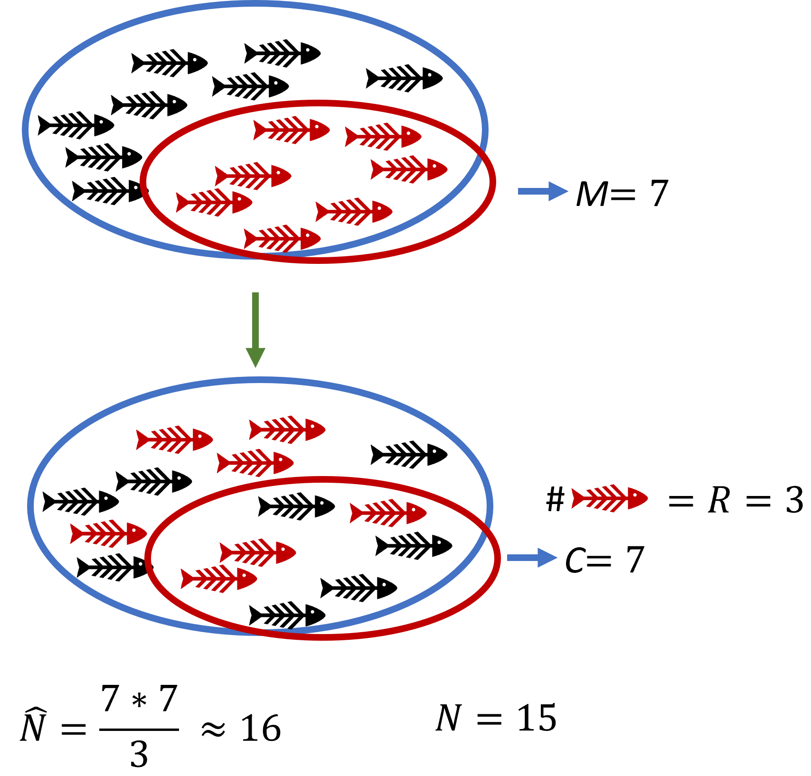
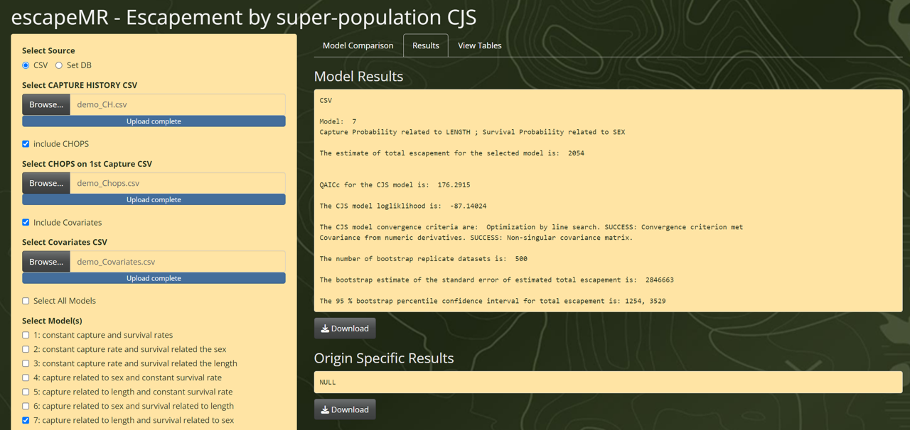
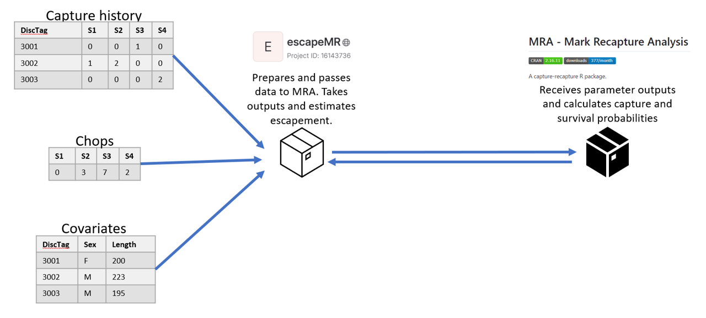
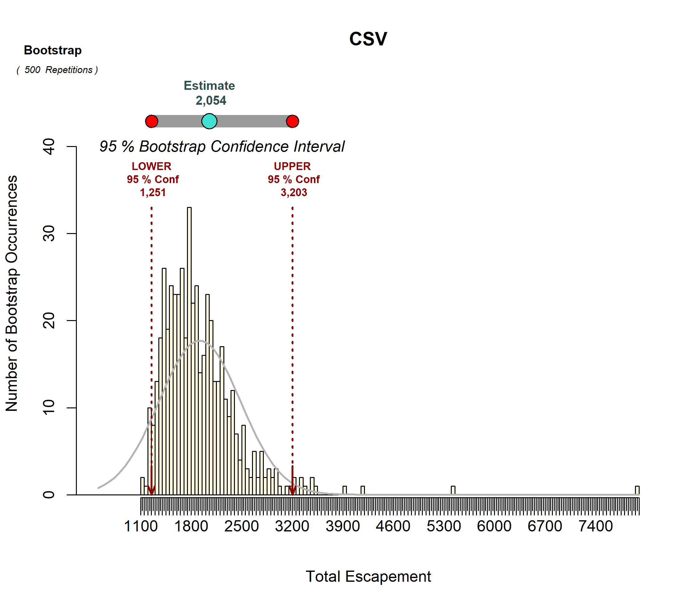
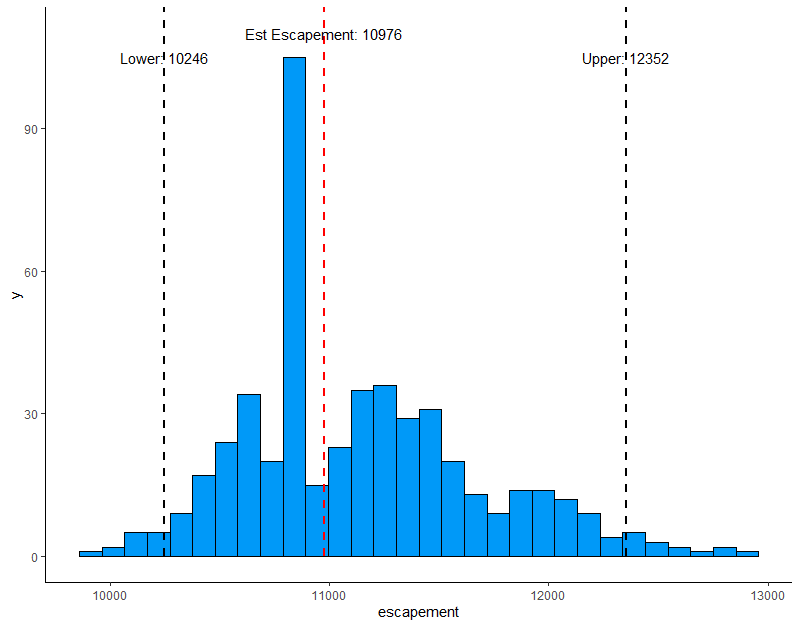

print("hello reader")[1] "hello reader"This document aims to provide an overview of the modeling methods used to estimate the annual escapement, the number of adults returning to spawn, of Central Valley Chinook Salmon (CVCS). Through this document we will review the basic concepts of mark-recapture methods, more complex models like the Cormack-Jolly-Seber, and how to write scripts that can calculate escapement estimates. This review will heavily rely on utilizing R scripting, and assumes the reader has a base understanding of the language, and how to write and implement R scripts and functions. I also assume the reader has a baseline understanding of statistical concepts such as linear regression and probability.
This is part of an effort to better translate and understand the current CVCS escapement model utilized by California Department of Fish and Wildlife (CDFW) and other groups in the escapeMR package. This model, R package and application was written by the contractor Trent McDonald, Ph.D., in 2020, and has proven very useful to state scientists in producing annual escapement estimates. While it has proven useful, it has also become a sort of “black-box model” in which users input data and receive outputs without understanding of how the model or package works.
I also aim to use this documentation in conjunction with a CVCS escapement modeling workshop being held at the West Sacramento CDFW offices on Tuesday August 20th 2024. Throughout this document various chunks of R code will be presented in the following format:
print("hello reader")[1] "hello reader"These chunks are designed for the user to be able to copy and paste, or rewrite entirely, into their own R script to replicate the methods. The functions written in this document can also be found in the “CVCS_functions.R” script included in the workshop repository. The code used in this document also relies on the “tidyverse” R package for various data formatting needs.
Mark and recapture is a common method for ecologists to estimate the size of a population of animals without needing to count each individual. Typically an initial ‘marking’ period is done, in which a sample of the population is captured and marked in some way so that those individuals can be recognized in the future. Then the marked individuals are returned to the greater population and allowed time to mix back in. Later, another sampling period will be conducted in which a sample of the population is collected again, and the number of marked individuals in this sample are enumerated. Because the proportion of marked individuals in the second sample should be proportional to the number of total marked individuals in the population, this ratio can be used to estimate the size of the total population.
In regards to the CVCS escapement mark-recapture surveys are conducted throughout the Central Valley in what is known as a “carcass survey”. Periodically, field crews will conduct surveys of Chinook salmon spawning grounds, looking for adult carcasses, which they mark with disk tags and return to the river, usually returning within a week to see if the carcass is still in the system, and mark new carcasses that have arrived. The field methods are a little more complex than that summary, and will be expanded upon in further sections.
The classic mark-recapture estimator is known as the Lincoln-Petersen (Petersen 1896; Lincoln 1930) and utilizes the equation:
\[\hat{N}=\frac{MC}{R} \text{ (eq. 1)}\]
Where \(M\) is the number of individuals marked and released during the initial marking period; \(R\) is the number of marked individuals recaptured in the later recapture period; \(C\) is the number of individuals captured in the recapture period; and \(\hat{N}\) is the estimate of population abundance.
In the diagram below (Figure 1), 7 fish from the population are captured and marked (\(K\)) during an initial capture and marking period. Then during a follow up recapture period, 7 fish are again captured (\(n\)), and of those 3 have markings (\(k\)). This leaves us with an estimate of a total population of roughly 16 fish.

There are several important assumptions of the Lincoln-Petersen method:
The population is closed so that \(N\) is constant during the study period. No deaths, no births, no immigration or emigration.
The probability of capture is equal across all individuals.
Fish do not lose their markings between the two sampling periods.
All marked fish recaptured during the second sampling period are accurately enumerated and recorded.
The Lincoln-Petersen method was expanded upon upon by Zoe Schnabel (1938) with the Schnabel estimator, which expands the Lincoln-Petersen estimator to allow for multiple periods of capture and recapture, instead of just two.
\[ \hat{N}=\frac{\sum_t(C_tM_t)}{\sum_tR_t} \text{ (eq. 2)} \]
This allows for marking to occur during multiple sampling periods \(t\). One primary advantage of this method is multiple sampling periods allow for the detection of violation of the above assumptions. Regression of the proportion of marked animals to previously marked animals (\(\frac{R_t}{C_t} \sim M_{t-1}\)) will be straight if assumptions are met, and curved if the assumptions are violated.
If we examine our the annual carcass surveys performed across the Central Valley for returning Chinook salmon, we can easily identify ways in which the system violates the assumptions of the Lincoln-Petersen method:
Populations are open: throughout the survey period adult Chinook arrive in the survey area, spawn, and die. At the same time spawned out carcasses that may or may not have been marked and counted are removed from the system either by scavengers, decay, or being flushed downstream.
Probability of capture is not homogeneous: probability of”capture” for individual Chinook carcasses is really the probability it is spotted by survey field crews. This can be dependent on a number of factors including carcass size, carcass sex, water flow rates, and turbidity.
The above violations of the Lincoln-Petersen estimates could cause large biases in abundance estimates, and suggests that using this closed population model is ill advised.
To deal with open populations and heterogeneous capture probabilities we can utilize a Cormack-Jolly-Seber (CJS) model (Cormack 1964; Jolly 1965; Seber 1965), which can deal with population changes during the survey period, as well as differences in capture probability among individuals. The CJS method does not directly provide estimates of abundance, instead it utilizes multiple sampling events during the survey period and allows us to calculate two important parameters:
\(\phi_{ij}\) : the probability carcass \(i\) “survives” (remains in the system) from period \(j\) to \(j+1\).
\(p_{ij}\) : the probability carcass \(i\) is captured during period \(j\).
We will generate estimates for \(p_{ij}\) and \(\phi_{ij}\) using the CJS Maximum Likelihood Estimation methods later, but for now know that the probability of capture can be used to estimate the population size at period \(j\) using the “Horvitz-Thompson estimator” (Horvitz and Thompson 1952; Nichols 2008):
\[ \hat{N_j}=\sum_{i=1}^{n}\frac{h_{ij}}{\hat{p}_{ij}} \space \text{ (eq. 3)} \]
Where \(h_{ij}\) is the 0 or 1 capture indicator for carcass \(i\) at period \(j\), and \(n\) is the number of all carcasses observed over all survey periods. Basically it’s saying the abundance of carcasses at time \(j\) is equal to the sum of all the carcasses captured during that period divided by their capture probability.
Typically the total population estimate \(\hat{N}\) is calculated by taking the average value of \(\hat{N}_j\), however there are problems with this method when many individuals are entering and leaving the population during the survey. This can be improved by using a superpopulation modification (Ryan, Cooper, and Tauer 2013) to estimate total escapement as:
\[ \hat{N}_{escapement}=\hat{N}_2\frac{ln(\tilde{\phi}_1)}{\tilde{\phi}_1-1}+B_2^*+B_3^*+...+B_{S-2}^* \space \text{ (eq. 4)} \]
Where \(B_j^*\), the adjusted number of “births” (new adults entering the system and dying) between \(j\) and \(j+1\), is:
\[ B_j^* = \tilde{B}_j\frac{ln(\tilde{\phi}_j)}{\tilde{\phi}_1-1} \space \text{ (eq. 5)} \]
\(\tilde{B}_j\) is the total “births” for period \(j\):
\[ \tilde{B}_j=\hat{N}_{j+1} - \tilde{\phi}[\hat{N}_j-(n_j-R_j)]\space \text{ (eq. 6)} \]
and \(R_j\) is the number of carcasses released with disctags during period \(j\), \(n_j\) is the number of carcasses captured during period \(j\), and \(\hat{N}_j\) is the estimate of abundance during period \(j\) derived from the Horvitz-Thompson estimator in equation 3.
For the CVCS carcass surveys, carcasses are captured over \(k\) occasions, usually weekly sampling events, marked with disctags, and deposited back into the system for future recapture. The CJS model used for CVCS carcass surveys incorporates three different data inputs to estimate \(\phi_{ij}\) and \(p_{ij}\): capture histories, “chops” records, and covariate data.
Capture histories are the records of capture and recapture for a given carcass and usually look similar to:
\[ \begin{bmatrix} DiscTag & S1 & S2 & S3 & S4 &... & k\\ 1601 & 1 & 0 & 1 & 1 &...\\ 1602 & 1 & 0 & 0 & 1 &...\\ 1603 & 0 & 0 & 1 & 1 &...\\ 1604 & 1 & 1 & 1 & 2 &...\\ \end{bmatrix} \]
Here each record is for a tagged carcass and the subsequent sampling periods \(j\). A value of 0 indicates the carcass was not captured, a value of 1 indicates the carcass was captured, and a value of 2 indicates the carcass was captured and “chopped” (beheaded) and removed from the system.
Chops is the record of the number of carcasses removed from the system upon first capture. This is done when the carcass is deteriorated beyond identification or measurement, and wont last long enough for further recaptures. The data can look like:
\[ \begin{bmatrix} S1 & S2 & S3 & S4 & S5 &... & k\\ 0 & 4 & 27 & 18 & 20 \end{bmatrix} \]
With just one row of total chopped counts for each sampling period.
Covariate data is the record of relevant covariates for each captured carcass or each survey period. For CVCS surveys, the covariates currently used are the sex and the length of the carcass. In the future we hope to incorporate environmental variables such as temperature and flow. A covariate table usually looks like:
\[ \begin{bmatrix} DiscTag & Sex & Length\\ 1601 & F & 200\\ 1602 & F & 223 \\ 1603 & M & 195\\ 1604 & M & 180\\ \end{bmatrix} \]
With the covariates recorded for each carcass marked with a disctag, and used to help determine different values of \(p\) and \(\phi\) for each carcass.
While equations 4 through 6 used to estimate abundance using carcass survey data may seem relatively straight forward, they are heavily dependent on estimates of \(p_{ij}\) and \(\phi_{ij}\), which are much more complex to get.
With these probabilities the “capture history” of a carcass \(i\) can be represented for each sampling period \(j\) as:
\[ \begin{matrix} j=1&\xrightarrow {\phi_{1i}}& j=2&\xrightarrow {\phi_{2i}}& j=3&\xrightarrow {\phi_{3i}}& j=4&\xrightarrow {\phi_{4i}}& j=5 &...\\ &&p_{2i} &&p_{3i} &&p_{4i} &&p_{5i} \end{matrix} \]
Let’s say we have the following ,very simple, set of capture histories for four carcass, across four different sampling periods:
\[ \begin{bmatrix} DiscTag & S1 & S2 & S3 & S4 \\ 1601 & 1 & 0 & 1 & 1 \\ 1602 & 1 & 0 & 0 & 1 \\ 1603 & 0 & 0 & 1 & 1 \\ 1604 & 1 & 1 & 1 & 2 \\ \end{bmatrix} \]
If we look at the first row of data, the capture history for the carcass with disc-tag number 1601, we see it was captured and marked during period 1, not captured in period 2, and then captured again in periods 3 and 4. We can assign a probability of observing this capture history as:
\[ P(1011|\text{release at period 1})=\phi_1(1-p_2)\phi_2p_3\phi_3p_4 \]
In the above, \((1-p_2)\) is the probability that the carcass is not captured at period \(j=2\). Now we can do the same with the rest of the example capture histories that we saw:
\[ P_1(1011 |\text{release at period 1})=\phi_1(1-p_2)\phi_2p_3\phi_3p_4 \]
\[ P_2(1001|\text{release at period 1})=\phi_1(1-p_2)\phi_2(1-p_3)\phi_3p_4 \]
\[ P_3(0011|\text{release at period 3})=\phi_2 p_3 \phi_3p_4 \]
\[ P_4(1112|\text{release at period 1})=\phi_1p_2\phi_2p_3\phi_3p_4 \]
In the above note the 2 at the end of the last capture history representing a chopped event. Chopped carcasses will be dealt with later. Also note that for \(P_3\) the likelihood conditions on the initial observation, and excludes estimates of \(\phi\) or \(p\) before that period.
We can use those equations to estimate the total likelihood of observing all the capture histories we saw as:
\[ L=P_1*P_2*P_3*P_4 \]
Or as the product of all \(n\) of the capture history probabilities (Amstrup, Mcdonald, and Manly 2005):
\[ L=\prod_{i=1}^n P_i \]
To make the computing of this probability easier we can log-transform our likelihoods so that:
\[ ln(L)=\sum_{i=1}^n ln(P_i) \text{ (eq. 7)} \]
This is known as the “log-likelihood” of the probability. Using this simple example above, we have a way to estimate the probability of observing a set of given capture histories if we have the capture (\(p\)) and survival (\(\phi\)) probabilities associated with each capture history.
Of course, we don’t know these probabilities, and they will likely vary across different covariates for each carcass and each period. Possible covariates could include size of carcass, carcass sex, or environmental variables such as temperature, flow, or turbidity. For CVCS work, we currently utilize covariates of sex and length to try and estimate capture and survival probabilities. For our example we will consider a CJS model in which capture probability is a function of length, and survival probability is a function of sex.
\[ P(capture|length) = \hat{\phi}_{ij} \]
\[ P(survival|sex) = \hat{p}_{ij} \]
These functions can best be represented with logistic regression models:
\[ \hat{\phi}_{ij}=\frac{e^{\Upsilon_0+\Upsilon_1x_{ij}}}{1+e^{\Upsilon_0+\Upsilon_1x_{ij}}} \]
\[ \hat{p}_{ij}=\frac{e^{\beta_0+\beta_1y_{ij}}}{1+e^{\beta_0+\beta_1y_{ij}}} \]
Where \(x_{ij}\) is the sex of a given carcass, and \(y_{ij}\) it’s length. To ease in estimating the coefficients \(\Upsilon\) and \(\beta\) we can turn the above into linear models:
\[ ln(\frac{\hat{\phi}_{ij}}{1-\hat{\phi}_{ij}})=\Upsilon_0+\Upsilon_1x_{ij}\text{ (eq. 8)} \]
\[ ln(\frac{\hat{p}_{ij}}{1-\hat{p}_{ij}})=\beta_0+\beta_1y_{ij}\text{ (eq. 9)} \]
with \(ln(\frac{\hat{\phi}_{ij}}{1-\hat{\phi}_{ij}})\) and \(ln(\frac{\hat{p}_{ij}}{1-\hat{p}_{ij}})\) as our logit functions, used as “link functions” to model the probabilities as linear functions of covariates (Amstrup, Mcdonald, and Manly 2005).
You can see above that if we can estimate the coefficients of those two equations, for a given sex or length (\(x_{ij},y_{ij}\)) we can estimate the corresponding probability of survival or capture. To estimate the coefficients of \(\Upsilon_0\), \(\Upsilon_1\), \(\beta_0\), and \(\beta_1\), we can use a method know as maximum log-likelihood estimation (MLE). To do this we first need to be able to estimate the log-likelihood of our model on a given set of coefficients and capture histories, basically: what is the log-likelihood of the capture histories we observed given a set of coefficients?
If we refer back to equation 7, we can remember that the log-likelihood of all the observed capture histories is equal to the sum of the log-likelihood of each individual capture history \(P_i\). The log–likelihood of the capture history for a given carcass \(i\) can be given as the sum of its capture and survival probabilities from its first to last encounter, plus \(\chi_1\): the probability it is not captured after its last release. This individual capture history log-likelihood can be represented as:
\[ ln(P_i)=\sum_{j=first}^{last}[h_{ij}*ln(\hat{p}_{ij})+(1-h_{ij})*ln(1-\hat{p}_{ij})+ln(\hat{\phi}_{j-1,i})]+\chi_i \text{ (eq. 10)} \]
Where \(h_{ij}\) is 1 if the carcass was observed during \(j\), and 0 otherwise. \(\chi_i\) can be represented as:
\[ \chi_i=(1-\hat{\phi}_{last,i})+\prod_{j=last}^n \hat{\phi}_{ij}*(1-\hat{p}_{j+1,i})*(1-\hat{\phi}_{(n-1),i})\text{ (eq. 11)} \]
The first part of equation 11 \((1-\hat{\phi}_{last,i})\) represents the probability the given carcass is removed from the system immediately after its last observation. The second part of equation 11 is the product of all probabilities that carcass remained in the system but wasn’t observed during all subsequent observation periods.
Now we have an equation (eq. 10) that provides us with the log-likelihood of observing a given capture history with specific survival and capture probabilities. We have also shown that values of \(\phi_{ij}\) and \(p_{ij}\) can be linear regressed across the coefficients \(\Upsilon_0\), \(\Upsilon_1\), \(\beta_0\), and \(\beta_1\) (equations 8 and 9). So now we can plug in values for the coefficients of equations 8 and 9 to give us capture and survival probabilities for a given carcass \(i\) during period \(j\), which we can put into equation 10 to give us the log-likelihood of observing the capture history of that carcass using those coefficients. This process can be repeated for each carcass and summed to give us the total log-likelihood of all capture histories for all carcasses in equation 7. We can then repeat this whole process with new coefficient values until we find the coefficients of equations 8 and 9 that provide us with the maximum log-likelihood. For a good explanation of how maximum likelihood works, I highly recommend this YouTube video: https://www.youtube.com/watch?app=desktop&v=XepXtl9YKwc, which does a good job summarizing the basic concept.
Of course, repeating the above steps to find the highest log-likelihood for even just one carcass history would take a long time to do manually, and we need to find the coefficients that will provide the highest likelihood across all of our capture histories and covariates. Fortunately, we can use an optimization algorithm to automate this process, and find the coefficients that produce the maximum likelihood estimation for us. I won’t expand on how MLE optimization algorithms work specifically, but we will be using optimization functions that available in base R, which will be discussed later.
Once an optimization algorithm provides us with the coefficients that give us the maximum likelihood of observing our capture history data with the given covariates, we can use it to calculate the capture probability for each carcass (\(\hat{p}_{ij}\)) given it’s length and sex. Those probabilities can then be utilized with the Horvitz-Thompson estimator (equation 3) to estimate total escapement for each period, and in turn providing an overall escapement estimate.
The escapeMR package (https://gitlab.com/tmcd/escapemr), written by Trent McDonald, Ph.D., was designed specifically for CDFW CVCS escapement surveys as a user-friendly Rshiny interface. The Rshiny application itself can either be accessed online here: https://tmcd.shinyapps.io/escapemr/, or by loading the escapeMR package into R and using the escapeMR() call to load the shiny app.
install.packages("escapeMR")
library(escapeMR)
escapeMR()The shiny application allows users to upload capture histories, chops data, and covariate data as .csv files. Then users can specify how the capture and survival probabilities are modeled using either sex or length covariates, and set bootstrap replications and target confidence intervals before running the model. After processing, the model outputs an estimate of total escapement with upper and lower bounds, and a histogram and summary of bootstrapping results.

Before attempting to code the equations and methods described above for our CVCS escapement model, it is helpful to review, at least at an overview level, how the escapeMR model and code works. This helped me develop the code and functions I wrote, and also identify potential restrictions and possible avenues for improvement.
The escapeMR package is actually a “front-end” package that loads and formats user data before passing it to a “back-end” package mra, which is the “Mark Recpature Analysis” package (https://cran.r-project.org/web/packages/mra/mra.pdf). The ‘mra’ package was also written by Trent McDonald, prior to his work with CDFW on the escapeMR package, and is a more generalized mark-recapture package without the user friendly interface.
Let’s first examine the escapeMR package by examining it’s gitlab repository: https://gitlab.com/tmcd/escapemr/-/tree/master/R. In this repository are several different R scripts that the package utilizes to load, format, and pass data to the mra package. I will make note of the ones important to our efforts here:
escapeMR.R - loads and runs the shiny application for user interface with the package.
askForData.R - prompts user to load catch history, chops, and covariate data, and then formats it for use in the mra package.
CJSscript.R - a script based version of the escapeMR shiny application that can be run in R without needing to use shiny. Takes user inputs and runs the “esc_model.R” script based on those inputs (model selection, bootstrap iterations, and confidence intervals).
esc_model.R - the workhorse script of the escapeMR package, this passes the formatted data to the mra package using the F.cjs.estim() call. The script then receives the estimates of \(\hat{N}_j\), \(\hat{p}\), and \(\hat{\phi}\), and uses them to estimate final escapement.
The mra package repository can be accessed here: https://github.com/tmcd82070/MRA/tree/master, note its been sometime since it was updated. There are a lot of folders and scripts in this repository, so again I will highlight the one’s I referenced in my efforts, and how they are applicable to our work.
F.cjs.estim.R - receives the input data from the escapeMR package, and set’s initial parameters to use with MLE to make our estimates of \(\hat{N}_j\), \(\hat{p}\), and \(\hat{\phi}\). This script then passes the initial parameters and relevant data to a .Fortran("cjsmod") call. This then utilizes the FORTRAN coding language and the “Mrawin.f90” script in the package to do all the leg-work of MLE.
Mrawin.f90 - this is FORTRAN script of various subroutines used in finding the MLE of our model. the “cjs” subroutine takes the formatted data and passes it to other subroutines which replicate many of the equations we’ve discussed so far.
VA09AD, which is the MLE algorithm that the mra package uses to find the most likely survival and capture probability coefficients for equations 8 and 9. I have not been able to find out much information about this algorithm, other than that is a minimization algorithm (so the mra package just multiplies it by \(-1\), and that it originates from the Harwell Subroutine Library. I was also unable to replicate this method in R, and am instead relying on the R optim() call for maximization. In a later section I will discuss the benefits and drawbacks of this.
To start our coding section, we’ll begin by getting our data together, and preparing to process it.
library(tidyverse)
ch<-read.csv('data/demo_CH.csv')
covars<-read.csv('data/demo_Covariates.csv')
chops<-read.csv('data/demo_Chops.csv')Let’s review our different data sets, first with the capture history data we loaded in as ‘ch’. For this demo data we are utilizing a smaller data set with just 153 capture histories to keep the processing time lower. The capture history should have the expected format, with the first column showing the individual disc-tag for each carcass. The following columns contain the observation values for each survey period, with either a 0, 1, or 2 representing no-observation, observation, or observation and removal, respectively.
head(ch) DiscTag X1 X2 X3 X4 X5
1 111 0 1 2 0 0
2 114 0 1 0 0 2
3 12 0 1 0 0 0
4 123 0 1 0 0 0
5 127 0 1 0 0 0
6 129 0 1 0 0 0Next we can review our covariate data “covars”, containing the sex and fork-length for each carcass that has a corresponding disc-tag and capture history.
head(covars) DiscTag sex length
1 111 M 755
2 114 M 737
3 12 F 718
4 123 F 763
5 127 M 754
6 129 F 728Finally we’ll review the “chops” data, which is just one record, with the number of carcasses for each survey period that were removed from the system on first observation. This carcasses won’t have capture histories represented in the “ch” data set.
head(chops) SurveyMetaID X1 X2 X3 X4 X5
1 1 10 42 95 61 13When coding our equations here, we’ll start at the end first. We’ll first write the Horvitz-Thompson estimator (equation 3), that we’ll then use in our superpopulation model (equation 4) to get our final estimate of escapement \(\hat{N}\). The Horvitz_Thompson() function I’ve created below does this in the following:
p_hat, a matrix of capture probabilities \(\hat{p}_{ij}\), and ch, our capture history dataframe.At this point we haven’t calculated values for \(\hat{p}_{ij}\) yet, that will be done further down the line.
Finds nan and ns (‘number of animals’ and ‘number of surveys’) of the capture history.
Makes an empty matrix n_mat with dimensions nan * ns that it fills with a for-loop with either a 0, if carcass \(i\) wasn’t observed in that period, or with \(\frac{1}{\hat{p}_{ij}}\) .
Calculates \(\hat{N}\) for each period \(j\) by summing all the records of n_mat during period \(j\).
Horvitz_Thompson<-function(p_hat,ch){
nan=nrow(ch)
ns=ncol(ch)
N_hat<-list()
n_mat<-matrix(NA,nan,ns)
for(j in 1:ns){
for(i in 1:nan){
n_mat[[i,j]]<-if(ch[[i,j]]>=1){
1/p_hat[[i,j]]
} else {0}
}
N_hat[[j]]=sum(n_mat[,j])
}
return(N_hat)
}If we next refer back to equation 4, we see we’ll also need estimates of \(B_j^*\) or the number of new carcasses entering the system between \(j\) and \(j+1\), which is given by equations 5 and 6. We’ll do all of that in one go here:
B_star<-function(ch,s_hat,p_hat){
R=n=list()
nan=nrow(ch)
ns=ncol(ch)
for(j in 1:ns){
d<-ch #select just the capture matrix data
R[j]<-as.numeric(length(which(d[j]==1)))
n[j]<-as.numeric(length(which(d[j]==1))+length(which(d[j]==2)))
}
N_hat<-Horvitz_Thompson(p_hat,ch)
#next B1, or total number of births for each period
B1<-list()
for(j in 2:(ns-2)){
B1[j]<-N_hat[[j+1]]-mean(s_hat[,j])*(N_hat[[j]]-(n[[j]]-R[[j]]))
}
#next Bstar, number of births adjusted for those entering the system between
#j and j+1, but not surviving to j+1
Bstar<-NULL
for(j in 2:(ns-2)){
Bstar[j]<-as.numeric(B1[[j]]*(log(mean(s_hat[,j]))/(mean(s_hat[,j])-1)))
}
Bstar<-Bstar[-(1)]
return(Bstar)
}The above function B_star() runs through a few steps:
First it uses a for-loop to calculate \(R_j\), the number of carcasses released with tags during \(j\); and \(n_j\), the number of carcasses captured during \(j\).
Then it uses the Horvitz_Thompson() function we wrote to estimate \(\hat{N}_j\).
It then uses s_hat (a matrix of \(\hat{\phi}_{ij}\) that like \(\hat{p}_{ij}\) we haven’t yet written a function to produce), and \(n_j\) and \(R_j\) to estimate B1 (\(\tilde{B}_j\), equation 5) the total number of births for period \(j\).
Finally it uses B1 and s_hat to calculate \(B_j^*\), the number of births between \(j\) and \(j+1\).
To wrap everything up we can write a final function total_escapement(), which uses what we’ve created so far to estimate \(\hat{N}_{escapement}\)(equation 4):
total_escapement<-function(ch,s_hat,p_hat){
N_hat=Horvitz_Thompson(p_hat,ch)
Bstar=B_star(ch,s_hat,p_hat)
escapement<-N_hat[[2]]*(log(mean(s_hat[,1]))/(mean(s_hat[,1])-1)) +
sum(Bstar,na.rm=T)
return(escapement)
}The total_escapement() function uses the Horvitz_Thompson() and B_start() functions we just created and returns our estimate of \(\hat{N}_{escapement}\). Note that the above requires we have both s_hat and p_hat, which will be matrices with dimensions nan and ns for values of \(\hat{\phi}\) and \(\hat{p}\) for each carcass \(i\) and period \(j\). We don’t yet have a way to estimate those, so that will be the next big step.
So far we’ve written functions that will allow us to take values for \(\hat{\phi}\) and \(\hat{p}\) and produce our final reported value of \(\hat{N}_{escapement}\). This brings us to the complicated part of estimating \(\hat{\phi}_{ij}\) and \(\hat{p}_{ij}\) for each carcass and survey period.
If we recall equations 8 and 9, we had ways of estimating \(\hat{\phi}_{ij}\) and \(\hat{p}_{ij}\) for each carcass based on linear regression for given covariates, in our example sex (\(x_{ij}\)) and length (\(y_{ij}\)). So if we can figure out values for the coefficients \(\Upsilon_0\), \(\Upsilon_1\), \(\beta_0\), and \(\beta_1\), we have a linear equation that solves for \(\hat{\phi}_{ij}\) and \(\hat{p}_{ij}\).
Now let’s write a function that replicates equations 8 and 9, which will utilize coefficients for \(\Upsilon\) and \(\beta\) to estimate values for \(\hat{\phi}\) and \(\hat{p}\).
pro_capsur<-function(i,j,ch, beta,cap_X,surv_X){
nan=nrow(ch)
ns=ncol(ch)
p=length(beta)
#purpose: evaluate probability of capture and survival for each animal i
cap_beta<-beta[1:(p/2)]
surv_beta<-beta[((p/2)+1):p]
zp<-exp(cap_beta[1]*1+cap_beta[2]*cap_X[i,j])
zs<-exp(surv_beta[1]*1+surv_beta[2]*surv_X[i,j])
p.hat<-zp/(1+zp)
s.hat<-zs/(1+zs)
est_list<-list('p.hat'=p.hat,'s.hat'=s.hat)
return(est_list)
}The plan of the above function is to use it on each capture history record to estimate the capture and survival probabilities for each carcass during each period. The pro_capsur() function incorporates several variables: i and j of course represent the given carcass and survey period; beta is a list of our four coefficients (\(\Upsilon_0\), \(\Upsilon_1\), \(\beta_0\), and \(\beta_1\), see equations 8 and 9); and cap_X and surv_X are each vectors of the capture and survival covariates from the covars dataframe.
The function begins by producing nan and ns from the ch dataframe, and assigning the capture coefficients and survival coefficients as cap_beta and surv_beta respectively. We also save a value of p which is just the number of coefficients we are using, in this case four. It then calculates zp and zs for a given carcass and survey \(i,j\), using equations 8 and 9 respectively. Here zs is \(ln(\frac{\hat{\phi}_{ij}}{1-\hat{\phi}_{ij}})\) and zp is \(ln(\frac{\hat{p}_{ij}}{1-\hat{p}_{ij}})\) , our logistic link functions. Finally the function uses those values of zs and zp to estimate \(\hat{\phi}\) and \(\hat{p}\), which it then adds to a list called est_list and labels them as s.hat and p.hat respectively.
Now that we have a function that can give us values of \(\hat{\phi}_{ij}\) and \(\hat{p}_{ij}\), we can utilize it to give us the log-likelihood for each individual capture history (\(P_i\)) we have observed using equation 10.
If we refer to equation 10, you’ll remember one important aspect to calculating the log-likelihood of a given capture history is that it sums all the probabilities of capture and survival from the first to the last detection event for a given carcass. This means we’ll need a way to find the first and last observation for a given carcass in our ch dataframe. To help in this process we can write a function that does this work for us and can be used later:
location<-function(nan,ns,ch){
#purpose: compute first and last capture for each animal
first <- rep(0, nan)
last <- rep(0, nan)
for(i in 1:nan){
findch=TRUE
for(j in 1:ns){
if(ch[i,j]>=1){
if(findch==T && (j<ns)){
first[i]=(j+1)
findch=FALSE
}
last[i]=j
}
}
}
est_list<-list('first'=first,'last'=last)
return(est_list)
}The location() function utilizes ch our capture history data frame, and runs a for-loop through each record and survey, looking for the first and last periods \(j\) that carcass \(i\) was observed during. It then returns two lists, est_list$first and est_list$last which list the first and last encounters respectively. While reviewing the above function, you may wonder why the record for first[i] is equal to j+1, where j is the first time it was encountered. This is because our estimate of likelihood for the given capture history is conditioned on the initial observation of the carcass, so when estimating capture probability we want first[i] to be the occasion after the first encounter, which is the period with the first estimable capture probability.
Our next function is the longest and most complicated, and aims to replicate equation 10. The end output is the estimated total log-likelihood of observing the provided capture histories with a given beta, our four coefficients (\(\Upsilon_0\), \(\Upsilon_1\), \(\beta_0\), and \(\beta_1\)). I’ve put the whole function in the following code chunk, but have included commented parts which I break down below:
CJS_loglik<-function(beta,cap_X,surv_X,ch){
#Part 1: Initialize variables
xlnlik <- 0
nan=nrow(ch)
ns=ncol(ch)
#Part 2: get locations
first<-location(nan,ns,ch)$first
last<-location(nan,ns,ch)$last
#Part 3: Calculating total log-likelihood
for(i in 1:nan){
#set initial values
sum1=0
sum2=0
vp_ij<-NA
vs_ij<-NA
if(first[i]==0){
init_cap=ns+1
init_surv=ns+1
} else if(first[i]>0){
init_cap=first[i]
init_surv=first[i]-1
}
#Part 3.1: Compute all probabilities of capturing carcass i,
#from first occasion to end
if (init_cap<=ns){
for (j in init_cap:ns) {
vp_ij[j] <- pro_capsur(i,j,ch,beta,cap_X,surv_X)$p.hat
}
}
#Part 3.2:Compute all probabilities of carcass i surviving from j to j+1,
#from first occasion to end
if(init_surv<ns){
for(j in init_surv:(ns-1)){
vs_ij[j] <- pro_capsur(i,j,ch,beta,cap_X,surv_X)$s.hat
}
}
#Part 3.3: compute log-likelihood contribution for animal i
if((first[i]>0 && first[i]<=last[i])){
for(j in first[i]:last[i]){#for each of the observations for the animal,
#from first contact to last
hij <- ifelse(ch[i, j] >= 1, 1, 0)
#for each observation, calculate a running sum of
#ln(L)=ln(p)+(ln(1-p))+ln(survival)
sum1=sum1+hij*log(vp_ij[j])+
(1-hij)*log(1-vp_ij[j])+
log(vs_ij[j-1])
}
}
#Part 3.4: Find second part of likelihood, Chi
#Chi = probability of animal i not being seen again after last i
#If animal died on capture before release, prob of not seeing again is 1
if(ch[i,last[i]]>=2){
sum2=0
}else if(last[i]>0 && last[i]<ns){
sum2=1-vs_ij[last[i]] #chance it died at last[i]
for(ii in (last[i]+1):ns){#for each obs after last[i]
prod<-1
for(jj in last[i]:(ii-1)){
prod<-prod*vs_ij[jj]*(1-vp_ij[jj+1])#product of all chances carcass
#survived but wasn't seen for each observation point between
#last and ns-1
}
if(ii<ns){
prod<-prod*(1-vs_ij[ii])
}
sum2<-sum2+prod
}
sum2<-log(sum2)
}
#Part 3.5: estimate total likelihood of carcass capture history
xlnlik<-xlnlik+sum1+sum2
}
return(xlnlik)
}Part 1: initializes some variables used throughout the rest of the function, including the initial value of xlnlik (which will be our final output) to 0.
Part 2: the CJS_loglik() function creates a first and last list for our capture histories using the location() function we just wrote.
Part 3: initializes a for-loop over each capture history record in ch , sets initial values for the loop. Also sets values for init_cap and init_surv, which will tell the next steps which period \(j\) to begin with when estimating values for vp_ij (\(\hat{\phi}_{ij}\)) and vs_ij (\(\hat{p}_{ij}\)) for each carcass.
For the above if statement, first[i]==0 is used because when the first encounter ends up being the last period of observation, the location() function we wrote will give it a first value of 0.
Part 3.1: computes values of \(\hat{p}\) for carcass \(i\) from the first observation to the last on utilizing the pro_capsur() function we wrote earlier, with the given coefficients beta. It assigns those values to the vectors vp_ij.
Part 3.2: computes values of \(\hat{\phi}\) for carcass \(i\) from the first observation to the last on utilizing the pro_capsur() function we wrote earlier, with the given coefficients beta. It assigns those values to the vectors vs_ij.
Part 3.3: uses the estimates of \(\hat{p}\) and \(\hat{\phi}\) to compute the log-likelihood contribution for carcass \(i\), used in equation 10. This is the first part of the equation calculating the log-likelihood of everything in equation 10 up to \(\chi\) . Saves output as value sum1.
Part 3.4: estimates the log-likelihood of \(\chi\) (equation 11), and adding them both together to get xlnlik, our final estimate of the log-likelihood for that individual capture history. Saves output as sum2
Part 3.5: once the for-loop is complete, the function returns the final value of xlnlik, the total sum of all the log-likelihood of observing all the observed capture histories given the provided covariates and coefficients in beta (\(\Upsilon_0\), \(\Upsilon_1\), \(\beta_0\), and \(\beta_1\)).
Now let’s review the functions we’ve made so far:
The total_escapement() function, which utilizes our capture history (ch); p_hat and s_hat, matrices of \(\hat{p}_{ij}\) and \(\hat{\phi}_{ij}\); as well as the Horivtz_Thompson() and B_star() functions to produce a final estimate of \(\hat{N}\) for the study period. This function replicates equation 4.
The pro_capsur() function was made to estimate the individual values of \(\hat{p}_{ij}\) and \(\hat{\phi}_{ij}\) which populate the p_hat and s_hat matrices using the covariates provided and the coefficients (\(\Upsilon_0\), \(\Upsilon_1\), \(\beta_0\), and \(\beta_1\)) stored in the beta list. This function replicates equations 8 and
The location() function which finds the first and last encounter for each carcass. This function is used in the CJS_loglik() function.
The CJS_loglik() function that utilizes the beta, ch, cap_X and surv_X data to estimate the total log-likelihood of the given capture histories and covariates being observed, given the provided coefficients. This function replicates equations 10
Recall that we can use equation 10 to find the coefficients in equations 8 and 9 that produce the highest likelihood of occurring, or the maximum log-likelihood estimation. We can leverage the optim() call in R, a general-purpose optimization function, to pass different values of beta into the CJS_loglike() function to find the set that maximizes the log-likelihood.
Before we can use the optim() function though, we need to define a wrapper function that takes the beta argument and passes the other required values (ch,cap_X, and surv_X) to the CJS_loglik()function. Then optim() can call the wrapper function with different values of beta to find the coefficients with the maximum log-likelihood. This wrapper function can be written like so:
CJS_loglik_wrapper <- function(beta, cap_X, surv_X, ch) {
-CJS_loglik(beta, cap_X, surv_X, ch) # Return the negative log-likelihood
}In the above CJS_loglike_wrapper() function, it returns the negative of the log-likelihood output, this is because by default the optim() function minimizes the negative of the log-likelihood.
Now we’ve written all the functions to replicate the equations covered, and allow us to find the most likely coefficients for equations 8 and 9 that will produce the observed capture histories and covariates. We can now take the functions we created, and apply them to the example data set we have to give us an estimate of total escapement.
Before we begin, we need to prepare the data we have for use in our functions. Because we’ll want to be testing our equations and functions using various example data sets, here I’ve written a function called CJS_data_prep() that does data formatting for us. Note that currently this function only incorporates sex and length data as covariates for survival and capture probabilities. In the future, if we aim to incorporate other covariates, data will need to be prepared differently.
CJS_data_prep<-function(ch,chops,covars){
set.seed(4211)
#Part 1: prepare ch and covars data
ch=ch[-1] #remove disctag vector from capture histories
covars$sex<-ifelse(covars$sex=='F',1,0) #change sex to numeric value
#Part 2: prep chops data
chops<-chops[-1]
clean_chops<-matrix(ncol=ncol(chops))
for(i in 1:ncol(chops)){
d<-chops[i]
r<-rep(0,ncol(chops))
r[i]=2
r<-matrix(rep((r),d),ncol=ncol(chops),byrow=T)
clean_chops<-clean_chops%>%rbind(r)
}
clean_chops<-clean_chops[-1,]
colnames(clean_chops)<-colnames(ch)
#add in chops
ch<-ch%>%rbind(clean_chops)
#Part 3: generate sex data for chopped data
index = 1:dim(ch)[1]
samp<- sample(index, replace = T)
covariates_new<-as.matrix(covars[samp,])
sex_vector<-covariates_new[,'sex']
no.miss = sex_vector[!is.na(sex_vector)]
prop.female<-mean(no.miss)
prop.male<-1-prop.female
sex_vector<-ifelse(is.na(sex_vector),
sample(c(1,0),1,prob=c(prop.female,prop.male)),
sex_vector)
sex_matrix<-matrix(sex_vector,nrow=nrow(ch),ncol=ncol(ch))
#Part 4: generate length data for chopped data
lengths_vector<-covariates_new[,'length']
females<-covariates_new[covariates_new[,2]==1,]
males<-covariates_new[covariates_new[,2]==0,]
avg.female.length<-round(mean(as.numeric(females[,3]),na.rm=T),1)
avg.male.length<-round(mean(as.numeric(males[,3]),na.rm=T),1)
for(i in 1:length(lengths_vector)){
if(is.na(lengths_vector[i])){
lengths_vector[i] = ifelse(sex_matrix[i,1] == 1,
avg.female.length,
avg.male.length)
}
}
lengths_matrix<-matrix(as.numeric(lengths_vector),
nrow=nrow(ch),ncol=ncol(ch))
return(list('ch'=ch,'lengths_matrix'=lengths_matrix,
'sex_matrix'=sex_matrix))
}Again, the above is a longer function, so I’ll break it down here:
Part 1: we begin by removing the first column of the capture history matrix ch, which contains the disctag data that can’t be used in our escapement functions. We also change the values of sex from “F” and “M” to 1 and 0, respectively.
Part 2: in this function we deal with the chops data chops by appending it to the original capture histories ch. We do this by creating a new matrix of capture histories for the chopped data and appends them to the original ch data.
Part 3: now that we’ve generated capture histories for all the chopped data, we also need to generate covariate data to utilize. First we start with the sex data, we do this by finding the proportion of male and female carcass in the original covariate data, and then assigning sex to the new capture histories based on that proportion.
Part 4: Finally we can generate the lengths covariate data for the added chops capture histories. This is done by taking the average male and female lengths, and assigning it to each of the added capture histories based on sex.
Assigning the average length data to carcasses is based on the methods of the escapeMR package. I think this could be improved upon by sampling from the distribution of known lengths for each chopped capture history.
ch<-read.csv('data/demo_CH.csv')
covars<-read.csv('data/demo_Covariates.csv')
chops<-read.csv('data/demo_Chops.csv')
prepped_data<-CJS_data_prep(ch,chops,covars)
ch_prepped<-prepped_data$ch
cap_X_prepped<-prepped_data$lengths_matrix
surv_X_prepped<-prepped_data$sex_matrixWe’ve prepared our data, now we can run it and our CJS_loglik_wrapper() function through the R optim() function. First we set our initial values for beta, then we can run the optimizer to produce the coefficients with the maximum log-likelihood. The R optim() call uses the following parameters:
par: the initial coefficient parameters we’ll be optimizing, in our case initial_beta.
fn: the function we will be optimizing, CJS_loglike_wrapper() that we created earlier.
cap_X: the capture covariate lengths matrix we just prepared to be passed to the function.
surv_X: the survival covariate sex matrix we just prepared to be passed to the function.
ch: the prepared capture history matrix to be passed to the function.
control: allows for various function control parameters, we will set the maximum number of iterations for here to 1000.
initial_beta=numeric(4)
{gc()
starttime<-Sys.time()
optim_results1<-optim(par=initial_beta,
fn=CJS_loglik_wrapper,
method="BFGS",
hessian=TRUE,
ch=as.matrix(ch_prepped),
cap_X=as.matrix(cap_X_prepped),
surv_X=as.matrix(surv_X_prepped),
control=list(maxit=1000))
endtime<-Sys.time()
optim_speed1<-endtime-starttime
}
optim_beta1<-optim_results1$parOnce the optim() call is finished we can see that the coefficients that produce the maximum log-likelihood are \(\Upsilon_0\)=0.9991058 , \(\Upsilon_1\)=-0.0043922 , \(\beta_0\)= 1.4311065, \(\beta_1\)=-0.806128 .
Next we can plug those parameters into our pro_capsur() function to estimate the capture and survival probabilities for each carcass \(i\) at each survey period \(j\). We’re likely going to have to do this process many times, so again we’ll write another function to do the work for us, and call it fill_prob_matrices(). This function will use the pro_capsur() function and apply it to all of our prepared data with the optimized parameters we’ve estimated and give us two output matrices p_hat and s_hat.
fill_prob_matrices<-function(ch,beta,cap_X,surv_X){
nan=nrow(ch)
ns=ncol(ch)
p_hat<-s_hat<-matrix( 0, nan, ns )
for(i in 1:nan){
for(j in 1:ns){
p_hat[i,j]<-pro_capsur(i,j,ch,beta,
cap_X,
surv_X)$p.hat
s_hat[i,j]<-pro_capsur(i,j,ch,beta,
cap_X,
surv_X)$s.hat
}
}
p_hat[,1]<-NA
est_list<-list('p_hat'=p_hat,'s_hat'=s_hat)
return(est_list)
}
p_hat<-fill_prob_matrices(ch_prepped,optim_beta1,
cap_X = cap_X_prepped,
surv_X = surv_X_prepped)$p_hat
s_hat<-fill_prob_matrices(ch_prepped,optim_beta1,
cap_X = cap_X_prepped,
surv_X = surv_X_prepped)$s_hatNow we have the capture histories (ch_prepped) and our matrices of capture and survival probabilities p_hat and s_hat, we can plug them all into our total_escapement() function to produce our final estimate of escapement.
est_escapement<-ceiling(total_escapement(ch_prepped,s_hat,p_hat))
print(est_escapement)[1] 1841If we go back to our optimization code using the nlminb() function, note that the code written stores the speed of the function as optim_speed1. If we check that value, we can see the function was completed in 3.8 seconds. The next step in our efforts involves a process known as “bootstrapping” so that we can calculate confidence intervals for the escapement estimate we produce. This process involves repeating the optimization process for hundreds of iterations, meaning that the above process could take quite a while to run. If we increase the complexity of the optimization problem with larger capture histories and covariate data sets, which many Central Valley river systems often record, it could take hours to bootstrap our model. We need a way to speed up our model.
filler
library(Rcpp)
sourceCpp('Rcpp sources/CJS_functions.cpp')
starttime<-Sys.time()
{gc()
optim_results2<-cpp_optim(beta=initial_beta,
ch=as.matrix(ch_prepped),
cap_X=as.matrix(cap_X_prepped),
surv_X=as.matrix(surv_X_prepped))
}
endtime<-Sys.time()
optim_speed2<-endtime-starttime filler
With the methods above used to estimate total escapement, it’s difficult to produce an estimate of precision or confidence intervals. Fortunately we can once again take advantage of the speed of modern computing to perform what is known as “bootstrapping”, an iterative resampling technique we can use to estimate the distribution of the escapement estimate by repeatedly sampling, with replacement, the original dataset.
CJS_bootstrap<-function(iterations,ch,cap_X,surv_X){
catch_matrices<-c()
results<-data.frame()
initial_beta=numeric(4)
for(r in 1:iterations){
iter_start<-Sys.time()
index=1:dim(ch_prepped)[1]
samp<- sample(index, replace = T)
ch_iteration = ch_prepped[samp,]
cap_X_iteration=cap_X_prepped[samp,]
surv_X_iteration=surv_X_prepped[samp,]
{gc()
optim_iter<-cpp_optim(beta=initial_beta,
ch=as.matrix(ch_iteration),
cap_X=as.matrix(cap_X_iteration),
surv_X=as.matrix(surv_X_iteration))
}
iter_beta<-optim_iter$par
iter_lik<-optim_iter$value
nan=nrow(ch_prepped)
ns=ncol(ch_prepped)
p_hat<-s_hat<-matrix( 0, nan, ns )
p_hat<-fill_prob_matrices(ch_iteration,iter_beta,
cap_X = cap_X_iteration,
surv_X = surv_X_iteration)$p_hat
s_hat<-fill_prob_matrices(ch_iteration,iter_beta,
cap_X = cap_X_iteration,
surv_X = surv_X_iteration)$s_hat
est_esc_iter<-ceiling(total_escapement(ch_iteration,s_hat,p_hat))
iter_end<-Sys.time()
iter_time<-iter_end-iter_start
catch_matrices[[r]]<-ch_iteration
d<-data.frame("iteration"=r,
"log-likelihood"=iter_lik,
"escapement"=est_esc_iter,
"time"=iter_time)
results<-results%>%rbind(d)
}
return(results)
}Let’s use the CJS_bootstrap() function with 500 iterations to generate confidence intervals for our escapement estimate.
bootstrap_results<-CJS_bootstrap(iterations=500,ch_prepped,cap_X_prepped,surv_X_prepped)Running 500 iterations took my computer about 7.5 minutes to complete, with each iteration averaging 0.89 seconds to complete.
Let’s calculate confidence intervals for our bootstrapped data.
#confidence intervals
conf.level = 95
alpha = 1 - conf.level/100
lower = alpha/2
upper = 1 - alpha/2
mid=.5
ci<-bootstrap_results
ci<-ci%>%
summarise(lower_ci=ceiling(quantile(escapement,probs = c(lower),na.rm=T)),
mid_ci=ceiling(quantile(escapement,probs = c(mid),na.rm=T)),
upper_ci=ceiling(quantile(escapement,probs = c(upper),na.rm=T)))Now let’s plot our results.

filler
filler: comparing demo data outputs to escapeMR estimates
library(escapeMR)
escapeMR("script")
Let’s compare a larger data set, using 2021 American River carcass survey data. After preparation, there are a total of 5244 individual capture histories and corresponding covariates. That’s a lot more than the demo data we used above. For this analysis we’ll run just 25 iterations through our bootstrap function, and even that will take about six minutes to complete.
ch<-read.csv('data/additional_data/AR_2021_CH.csv')
covars<-read.csv('data/additional_data/AR_2021_Covariates.csv')
chops<-read.csv('data/additional_data/AR_2021_Chops.csv')
prepped_data<-CJS_data_prep(ch,chops,covars)
ch_prepped<-prepped_data$ch
cap_X_prepped<-prepped_data$lengths_matrix
surv_X_prepped<-prepped_data$sex_matrix
starttime<-Sys.time()
bootstrap_results<-CJS_bootstrap(iterations=25,
ch_prepped,
cap_X_prepped,
surv_X_prepped)
endtime<-Sys.time()
bootstrap_speed3<-endtime-starttime
ci<-bootstrap_results
ci<-ci%>%
summarise(lower_ci=ceiling(quantile(escapement,probs = c(lower),na.rm=T)),
mid_ci=ceiling(quantile(escapement,probs = c(mid),na.rm=T)),
upper_ci=ceiling(quantile(escapement,probs = c(upper),na.rm=T)))